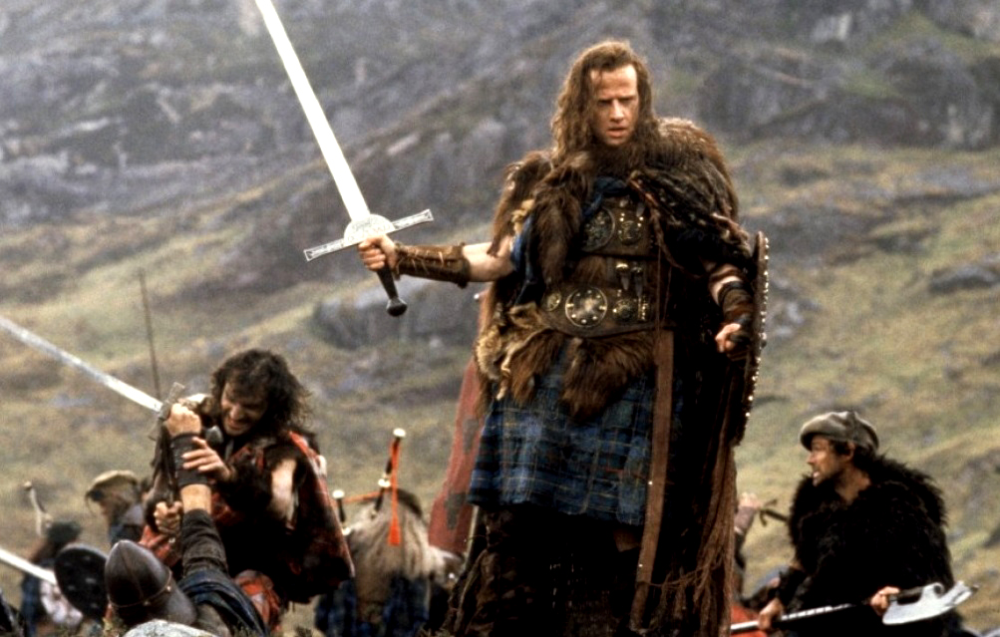
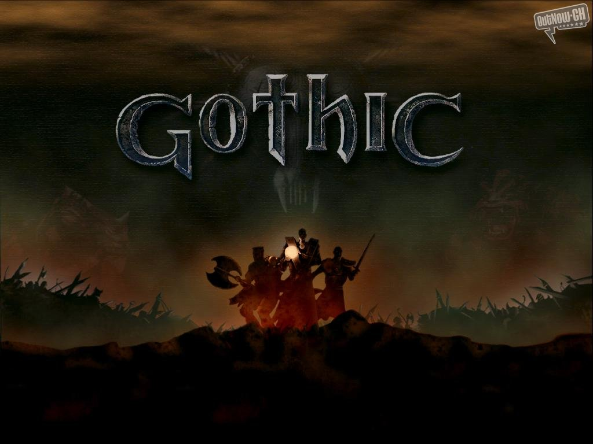

- 1desarrollador:...
- 2año de lanzamiento:...
- 3genero:...

Highlander (1986), dirigida por Russell Mulcahy, es una película de acción y fantasía que sigue la historia de Connor MacLeod (Christopher Lambert), un guerrero escocés inmortal que descubre su verdadera naturaleza tras sobrevivir a una herida mortal en batalla. A lo largo de los siglos, debe enfrentarse a otros inmortales en duelos a muerte, ya que solo puede quedar uno. Guiado por su mentor, Ramírez (Sean Connery), y perseguido por el despiadado Kurgan (Clancy Brown), Connor lucha por sobrevivir hasta el enfrentamiento final. La película es famosa por su estilo visual, su banda sonora de Queen y su concepto único de inmortalidad.
- 1director:...
- 2año de lanzamiento:...
- 3reparto:...
Gothic

Gothic (2001) es un videojuego de rol desarrollado por Piranha Bytes. Ambientado en un oscuro mundo de fantasía medieval, el jugador asume el papel de un prisionero sin nombre atrapado en una colonia penal rodeada por una barrera mágica. Para sobrevivir y encontrar una forma de escapar, debe unirse a una de las facciones en conflicto, enfrentarse a criaturas peligrosas y descubrir los secretos de la colonia. Con su mundo abierto dinámico, su enfoque en decisiones que afectan la historia y su desafiante jugabilidad, Gothic se convirtió en un título de culto dentro del género RPG.